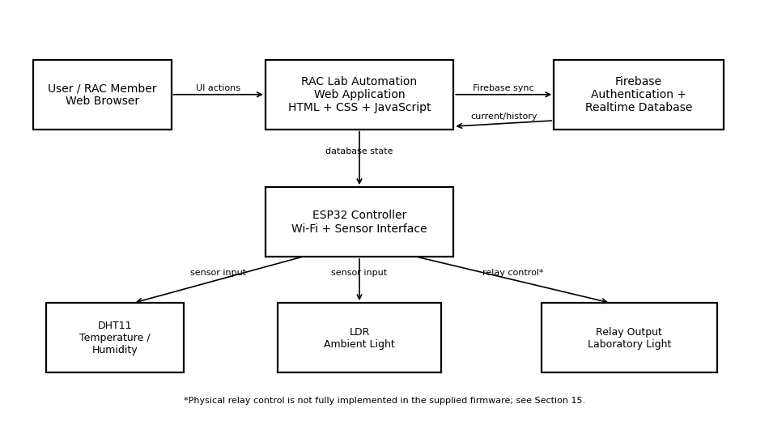
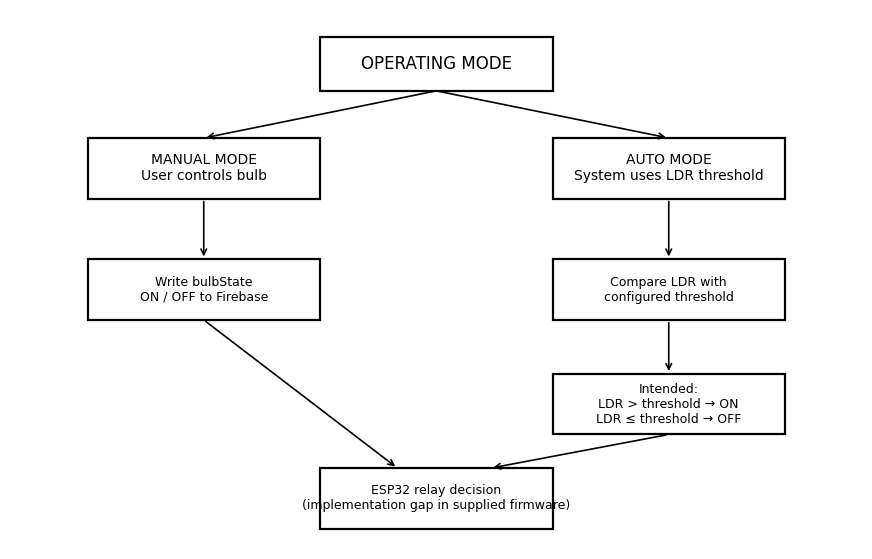
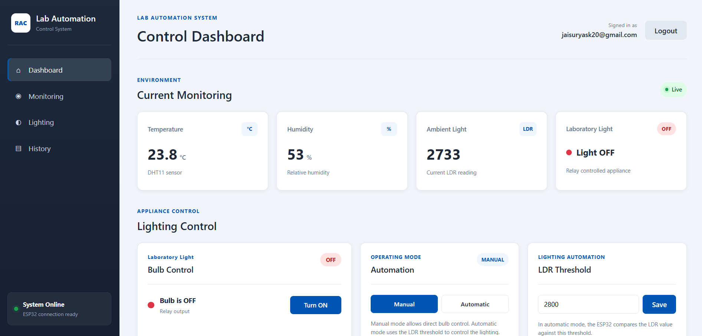
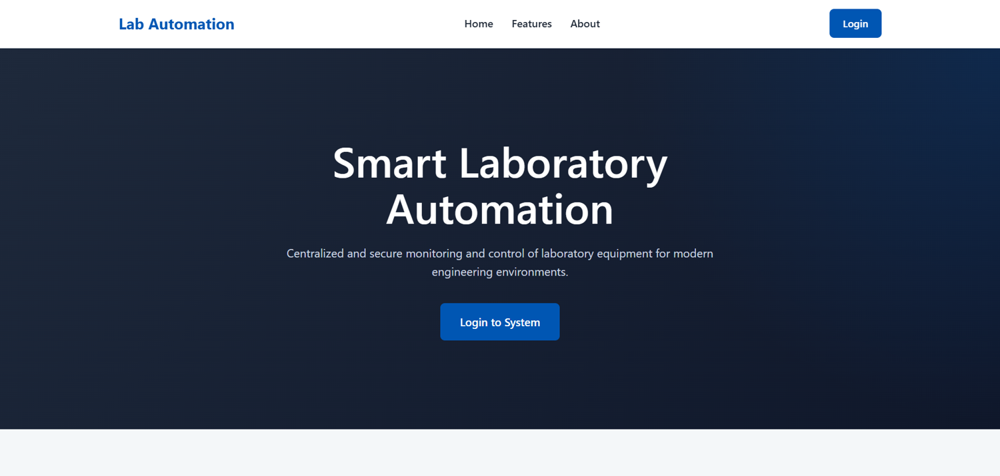
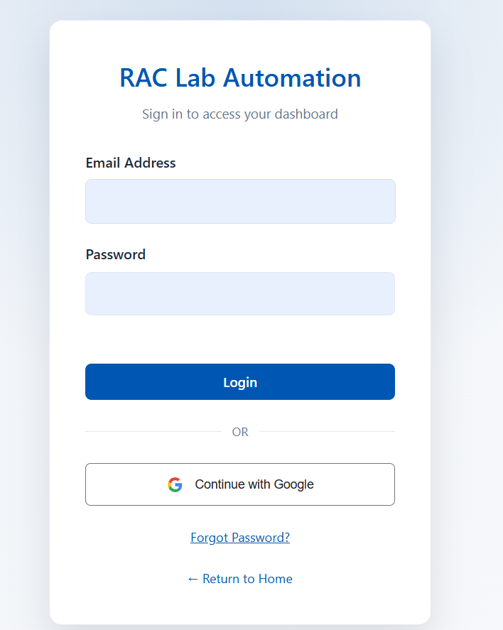
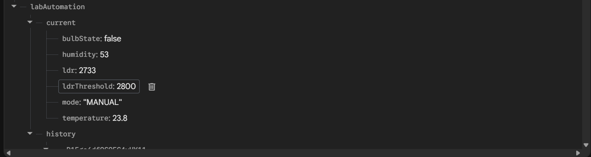
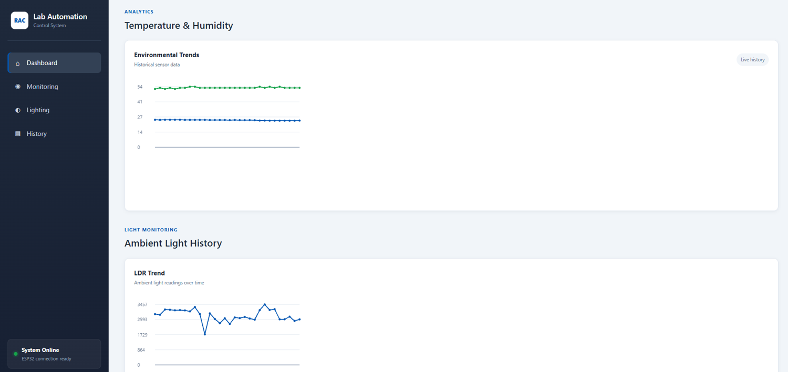
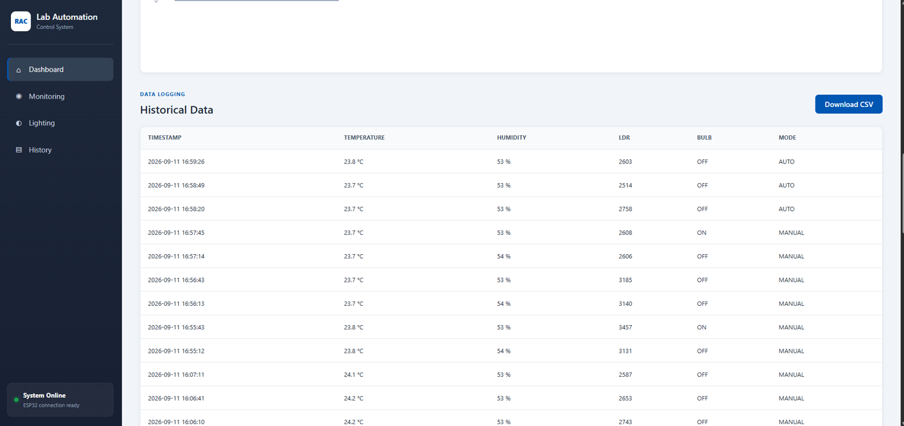

IoT control of the bulb, all together
Sensors, an ESP32, Firebase and a web dashboard working as one system to monitor the lab and control its bulb in Manual and Automatic modes. This page documents the hardware, firmware, data, tests and what is left to finish. The dashboard itself is shown in Task 4.
Where the project stands
The write-up separates what was seen working from what was only written in code. That makes it useful for a technical review, because nothing is claimed that was not checked.
Working and evidenced
- Landing page, sign-in and dashboard are in place.
- Live temperature, humidity and light values reach the page from the ESP32 through Firebase.
- Manual and Auto buttons write the mode to Firebase.
- The LDR threshold is validated and saved.
- History logging every 30 seconds: 184 records in the export.
- Videos show the bulb switching in Manual mode and in Automatic mode.
- Charts, history table and CSV export are built into the dashboard.
Still to complete
- The supplied sketch does not read
bulbState,modeorldrThresholdfrom Firebase. - The supplied sketch has no code after set-up that writes the relay pin.
- The firmware’s threshold is a local 400 and the saved one is 2800.
- The firmware version used in the videos has to be added to the documentation.
- Relay polarity and LDR direction have to be checked on the bench.
In one line: the sensors, Firebase, sign-in, charts, history and the web controls work, and the videos show the bulb switching in both modes. The sketch supplied with the report does not yet read the dashboard’s light, mode and threshold values or drive the relay, so the version used for the demo still has to be documented.
Architecture

Data flow
- The user signs in to the web app.
- The dashboard listens to
labAutomation/currentandlabAutomation/history. - The ESP32 reads the DHT11 and the LDR and writes the current values.
- Every 30 seconds it pushes a history record.
- The dashboard updates its cards, bulb state, mode and threshold when Firebase changes.
- Dashboard actions write
bulbState,modeandldrThresholdto Firebase. - To close the loop, the ESP32 must read those values and drive the relay. That step is not in the supplied firmware.
Hardware
The pin assignments below come straight from the firmware. They are software settings, not a wiring check.
| Component | Function | ESP32 pin | Source |
|---|---|---|---|
| DHT11 | Temperature and humidity | GPIO 4 | DHTPIN 4, DHTTYPE DHT11 |
| LDR | Analog ambient light | GPIO 34 | LDR_PIN 34, analogRead() |
| Relay | Lab light output | GPIO 26 | RELAY_PIN 26 |
| Wi-Fi | Network | Built in | WiFi.begin() |
| Firebase | Cloud sync | Wi-Fi + TLS client | FirebaseClient library |
Sensors. The DHT11 and the LDR are read every 5 seconds. Relay. GPIO 26 is set as an output and written LOW once at start-up. Nothing in the supplied firmware writes it again.
Software stack
| Layer | Technology | Role |
|---|---|---|
| Web UI | HTML5 | Landing page, login page and dashboard structure |
| Styling | CSS | Responsive dashboard and control cards |
| Client logic | JavaScript modules | Firebase listeners, controls, charts, history, CSV |
| Authentication | Firebase Authentication | Email and password, Google sign-in, logout, password reset |
| Database | Firebase Realtime Database | Current state and history |
| Embedded | ESP32, C++ | Sensors, Wi-Fi, NTP time and Firebase writes |
| Libraries | FirebaseClient, DHT | Firebase communication and DHT11 sensing |
| Time | NTP | Timestamps with the India UTC+5:30 offset |
| Web SDK | Firebase JS SDK 10.5.0 | Browser-side Firebase |
RAC Lab Automation
├── Landing page
├── Login page (Firebase Authentication)
├── Dashboard
│ ├── Current monitoring
│ ├── Lighting control, operating mode, LDR threshold
│ ├── Temperature and humidity chart, LDR chart
│ └── Historical data + CSV export
├── Firebase Realtime Database
│ ├── labAutomation/current
│ └── labAutomation/history
└── ESP32 firmware
├── DHT11, LDR, Wi-Fi, NTP
└── Firebase writesESP32 firmware
What the firmware does: connect to Wi-Fi, get the time from NTP, sign in to Firebase, read the sensors, update the current values and push a history record. The listings here are sanitised. All passwords, keys, the account and the database address are placeholders.
Configuration and state
#define ENABLE_USER_AUTH
#define ENABLE_DATABASE
#include <WiFi.h>
#include <WiFiClientSecure.h>
#include <FirebaseClient.h>
#include <DHT.h>
#include <time.h>
#define WIFI_SSID "YOUR_WIFI_NAME"
#define WIFI_PASSWORD "YOUR_WIFI_PASSWORD"
#define API_KEY "YOUR_FIREBASE_API_KEY"
#define USER_EMAIL "YOUR_FIREBASE_USER_EMAIL"
#define USER_PASSWORD "YOUR_FIREBASE_USER_PASSWORD"
#define DATABASE_URL "YOUR_DATABASE_URL"
#define DHTPIN 4
#define DHTTYPE DHT11
#define LDR_PIN 34
#define RELAY_PIN 26
const unsigned long SENSOR_INTERVAL = 5000; // 5 s
const unsigned long HISTORY_INTERVAL = 30000; // 30 s
// "These will be connected to Firebase control later."
bool bulbState = false;
String operatingMode = "MANUAL";
int ldrThreshold = 400;Setup
void setup() {
Serial.begin(115200);
dht.begin();
pinMode(LDR_PIN, INPUT);
pinMode(RELAY_PIN, OUTPUT);
digitalWrite(RELAY_PIN, LOW);
WiFi.begin(WIFI_SSID, WIFI_PASSWORD);
while (WiFi.status() != WL_CONNECTED) { Serial.print("."); delay(300); }
configTime(19800, 0, "pool.ntp.org", "time.nist.gov"); // UTC+5:30
delay(2000);
ssl_client.setInsecure();
initializeApp(aClient, app, getAuth(user_auth), processData, "authTask");
app.getApp<RealtimeDatabase>(Database);
Database.url(DATABASE_URL);
}Main loop
void loop() {
app.loop(); // Firebase background work
if (!app.ready()) return;
if (millis() - lastSensorUpdate >= SENSOR_INTERVAL) {
lastSensorUpdate = millis();
float temperature = dht.readTemperature();
float humidity = dht.readHumidity();
int ldrValue = analogRead(LDR_PIN);
if (isnan(temperature) || isnan(humidity)) {
Serial.println("DHT11 read failed.");
return;
}
String timestamp = getTimestamp();
// Latest values
Database.set<number_t>(aClient, "/labAutomation/current/temperature", number_t(temperature, 2));
Database.set<number_t>(aClient, "/labAutomation/current/humidity", number_t(humidity, 2));
Database.set<int> (aClient, "/labAutomation/current/ldr", ldrValue);
// History record every 30 s
if (millis() - lastHistoryLog >= HISTORY_INTERVAL) {
lastHistoryLog = millis();
String historyJson = "{\"timestamp\":\"" + timestamp + "\","
"\"temperature\":" + String(temperature, 2) + ","
"\"humidity\":" + String(humidity, 2) + ","
"\"ldr\":" + String(ldrValue) + ","
"\"bulbState\":" + (bulbState ? "true" : "false") + ","
"\"mode\":\"" + operatingMode + "\"}";
Database.push<object_t>(aClient, "/labAutomation/history", object_t(historyJson));
}
}
}| Element | Documented behaviour |
|---|---|
setup() | Starts serial, DHT11, GPIOs, Wi-Fi, NTP, the TLS client and Firebase. |
loop() | Runs Firebase background work and reads the sensors on a timer. |
getTimestamp() | Returns YYYY-MM-DD HH:MM:SS in local time. |
| Current values | Temperature, humidity and LDR are written to labAutomation/current. |
| History | A JSON record is pushed under labAutomation/history. |
| Relay set-up | GPIO 26 is an output, written LOW once. |
| Control readback | Not present in the supplied firmware. |
| Timer | Interval | What it triggers |
|---|---|---|
| SENSOR_INTERVAL | 5000 ms | Sensor read and current-value update |
| HISTORY_INTERVAL | 30000 ms | New history record |
| NTP offset | 19800 s | UTC+5:30 |
Manual and automatic modes

| Feature | MANUAL | AUTO |
|---|---|---|
| Who decides the light? | The user | Logic using the LDR threshold |
| Dashboard bulb button | Enabled | Disabled |
| Firebase mode value | MANUAL | AUTO |
| Threshold used? | No | Yes, as intended |
| Typical use | Direct control and testing | Automatic lighting |
| Relay decision in the supplied firmware | Not implemented | Not implemented |
| Web UI handling | Implemented | Implemented |
The mode switch, the bulb button and the threshold box all sit on the dashboard. In the capture the mode is Manual, the bulb is OFF and the threshold is 2800.

Both modes on video
Two short recordings of the bench setup. Watch the bulb on the desk next to the laptop: it lights and goes off in both clips.
About the evidence. The videos show the lamp switching in Manual and in Automatic mode. The firmware supplied with the report has no code that reads the controls back or drives the relay, so the version used for these recordings is not the sketch listed above. Documenting that version would close findings F02 to F05.
What the web layer does
- Choose MANUAL on the dashboard.
- The dashboard writes
MANUALtolabAutomation/current/mode. - The bulb button becomes available.
- Turn ON or Turn OFF flips the logical
bulbStateand writes it to Firebase. - The page updates when the listener receives the new value.
- In the finished system the ESP32 would read
bulbStateand drive the relay.
- Choose AUTOMATIC on the dashboard.
- The dashboard writes
AUTOtomode. - The bulb button is disabled in the browser.
- The threshold is kept in
ldrThreshold. - The intended rule is LDR > threshold means light ON, and LDR ≤ threshold means light OFF.
- The ESP32 would need to read the mode and threshold and apply the rule itself.
Threshold. The dashboard accepts a number from 0 to 4095 (the 12-bit ADC range) before saving it to Firebase. The saved value in the captured data is 2800, while the firmware’s own default is 400 and it never reads the Firebase value.
Dashboard code
The dashboard is a Firebase web app written as JavaScript modules. The screens are shown in Task 4. Here is what each block of the script does.
| Function or block | Purpose |
|---|---|
| Firebase initialisation | Creates or reuses the Firebase app and connects to the database. |
currentRef, historyRef | References to labAutomation/current and labAutomation/history. |
onValue(currentRef) | Receives live updates and refreshes the dashboard. |
updateSensorValues() | Updates the temperature, humidity and LDR values. |
updateBulbUI() | Updates the bulb indicator and disables the manual button in AUTO. |
updateModeUI() | Updates the MANUAL and AUTO badges and buttons. |
updateThresholdUI() | Shows the Firebase threshold in the input. |
| Bulb control listener | Writes bulbState unless the mode is AUTO. |
| Mode listeners | Write MANUAL or AUTO to Firebase. |
| Threshold save | Checks 0 to 4095, then writes ldrThreshold. |
| History listener | Loads history and refreshes the table and charts. |
| CSV generation | Builds a download with timestamp, temperature, humidity, LDR, bulb state and mode. |

Sign-in

| Feature | How it is done |
|---|---|
| Email and password | signInWithEmailAndPassword() |
| Google sign-in | GoogleAuthProvider with signInWithPopup() |
| Route protection | onAuthStateChanged() sends signed-out visitors to the login page |
| Signed-in display | The user’s email appears in the dashboard header |
| Password reset | sendPasswordResetEmail() |
| Error messages | Firebase errors are turned into readable text |
Data, history and CSV
The database as seen in the Firebase console, and the two views the dashboard builds from it.



| Path | Field | Type | Meaning |
|---|---|---|---|
| labAutomation/current | temperature | number | Current temperature in °C |
| labAutomation/current | humidity | number | Current relative humidity in % |
| labAutomation/current | ldr | number | Current LDR ADC reading |
| labAutomation/current | bulbState | boolean | Requested or current logical bulb state |
| labAutomation/current | mode | string | MANUAL or AUTO |
| labAutomation/current | ldrThreshold | number | Configured threshold |
| labAutomation/history/<key> | timestamp, temperature, humidity, ldr, bulbState, mode | mixed | One logged reading |
The dashboard reads all history records, sorts them by timestamp, shows the latest 50 in the table and draws the charts from the full set. CSV export uses the columns Timestamp, Temperature, Humidity, LDR, BulbState and Mode. The numbers for the 184 records are on the Task 4 page.
| Metric | Observed |
|---|---|
| History records | 184 |
| Time range | 2026-09-11 14:30:24 to 16:59:26 |
| Temperature | 23.7 to 25.3 °C, average 24.48 |
| Humidity | 49 to 61 %, average 52.18 |
| LDR | 1749 to 4095, average 2876.7 |
| Mode | 152 MANUAL, 32 AUTO |
| Bulb | 174 OFF, 10 ON |
Requirements and status
| Requirement | Implementation or evidence | Status |
|---|---|---|
| Signed-in access | Firebase Authentication script and login screenshot | Implemented |
| Live temperature, humidity, LDR | DHT11 and LDR, ESP32, Firebase current, dashboard | Implemented |
| Manual mode UI | Mode selector and Firebase mode write | Implemented |
| Manual physical relay control | Bulb switches in the Manual video. The supplied sketch does not read bulbState | Video, code pending |
| Automatic mode UI | Mode selector and button lock-out | Implemented |
| Automatic LDR relay logic | Bulb switches in the Automatic video. The rule is not in the supplied sketch | Video, code pending |
| Configurable threshold | Dashboard validates and writes ldrThreshold | Implemented |
| Threshold used by the ESP32 | The supplied sketch has 400 and does not read Firebase | Not complete |
| History logging | ESP32 pushes records to history | Implemented |
| Analytics | Dashboard reads history and draws charts | Implemented |
| CSV export | Dashboard JavaScript builds the CSV | Implemented |
Test plan and verification
The matrix keeps software evidence apart from physical evidence, so a web value changing is never reported as a lamp switching.
| ID | Test | Expected | Evidence |
|---|---|---|---|
| T01 | Open landing page | Landing page loads | Screenshot, observed |
| T02 | Sign in with a valid account | Dashboard opens | Observed |
| T03 | Open the dashboard signed out | Redirect to login | Logic in the code |
| T04 | Read temperature, humidity, LDR | Dashboard shows Firebase values | Observed: 23.8 °C, 53 %, 2733 |
| T05 | Select MANUAL | Mode stored, button enabled | Observed in the UI |
| T06 | Select AUTO | Mode stored, button disabled | Observed in the UI |
| T07 | Save threshold | Value stored in Firebase | Observed: 2800 |
| T08 | History logging | New records appear | Observed: 184 records |
| T09 | Analytics | Charts follow the history | Observed |
| T10 | CSV export | File has the required columns | Documented in code |
| T11 | Manual relay | Lamp follows bulbState | Video: lamp switches. Code version not supplied |
| T12 | Auto relay | Lamp follows LDR threshold | Video: lamp switches. Code version not supplied |
Findings and the way to finish
| ID | Finding | Detail |
|---|---|---|
| F01 | The dashboard writes the controls | bulbState, mode and ldrThreshold are written to Firebase. |
| F02 | Supplied firmware does not read them back | The supplied sketch never reads those three values. |
| F03 | No relay logic after set-up | GPIO 26 is configured but never driven HIGH or LOW from the controls. |
| F04 | Threshold mismatch | Firebase holds 2800. The firmware default is 400 and is never updated. |
| F05 | Mode is local in the firmware | operatingMode is fixed at MANUAL and logged, not synced. |
| F07 | Videos show the lamp switching | The Manual and Automatic recordings show the bulb responding, so a firmware version with read-back and relay control was used. It was not supplied, and adding it would close F02 to F05. |
| F06 | The UI lock-out is not enforcement | Disabling a browser button does not stop the controller or another client from acting. |
Recommended control logic
This is a design for the missing step, not code that exists in the supplied firmware.
// Recommended completion (design only, not in the supplied firmware)
read mode, bulbState and ldrThreshold from Firebase
if mode == "MANUAL":
relay_state = bulbState
else if mode == "AUTO":
if ldrValue > ldrThreshold: relay_state = ON
else: relay_state = OFF
write relay_state to RELAY_PIN
publish the resulting state back to FirebaseBefore connecting the real light
- Check whether the relay module is active-HIGH or active-LOW.
- Check the LDR direction with a real measurement.
- Pick the threshold from measured lab lighting.
- Test manual ON and OFF with a safe low-voltage load first.
- Test automatic changes either side of the threshold.
- Only then connect the lab light, with proper electrical safety.
Security and deployment
- Keep Wi-Fi passwords and Firebase account passwords out of public repositories.
- Use Firebase Authentication instead of passwords written into browser code.
- Set database security rules so signed-in users cannot write anything they like.
- The Firebase web configuration in the browser is configuration, not protection. The rules are the protection.
- Rotate any credential that appeared in source files or screenshots.
- The firmware turns off certificate checking on its TLS connection (
setInsecure()). That is acceptable for a demo but should be replaced with certificate validation for real use. - Do not connect an unverified relay output to a mains load while debugging.
Operating procedure
Start-up
- Power the ESP32 and sensors.
- Check that it joins the Wi-Fi.
- Check that the time sync works.
- Check that Firebase starts.
- Open the web app.
- Sign in with an authorised account.
- Check that live values appear.
Manual operation
- Select MANUAL.
- Check the dashboard shows MANUAL.
- Press the light button to request ON or OFF.
- Check
bulbStatechanges in Firebase. - For a full test, check that the relay and lamp follow.
Automatic operation
- Set a suitable threshold and save it.
- Select AUTO.
- Check the manual button is disabled.
- Change the light and watch the LDR value.
- Check the intended rule: above the threshold means ON, at or below means OFF.
- Finish the physical check once the ESP32 reads the controls and drives the relay.
Troubleshooting
| Symptom | Area | Checks |
|---|---|---|
| No live data | Firebase or ESP32 | Check Wi-Fi, Firebase start-up, the database path and the browser console. |
| Temperature or humidity missing | DHT11 | Check wiring, set-up and the read-failed message. |
| LDR value missing | LDR and ADC | Check GPIO 34, wiring and the analog reading. |
| Mode changes but the lamp does not respond | Firmware control path | The supplied firmware has no read-back or relay logic yet. |
| Threshold looks right in the UI but the behaviour is wrong | Threshold sync | The firmware defaults to 400 and does not read the saved value. |
| Relay seems inverted | Relay polarity | Check whether the module is active-HIGH or active-LOW and change the output logic. |
| History table is empty | Firebase history | Check the history path and read permissions. |
| CSV download fails | Browser JavaScript | Check console errors and the history data structure. |
| Login fails | Authentication | Check the provider set-up, credentials and Firebase Auth settings. |
In depth: how it really works
This section explains how the firmware works, why it is written the way it is, what “closing the loop” means for the unfinished step, and a few things the data and the code tell us when read together.
One 5-second cycle of the firmware
app.loop()runs. The Firebase library does its background work: keeping the sign-in valid and handling replies. It runs on every pass ofloop(), soloop()must never be blocked.- The ESP32 checks it is ready.
app.ready()is false until sign-in has finished. If it is false, the loop returns and tries again. - A timer check.
millis() - lastSensorUpdate >= 5000is true once every five seconds. This is a non-blocking timer: the loop keeps spinning and only acts when the time is up. Adelay(5000)would freeze everything, including Firebase. - The sensors are read. The DHT11 gives temperature and humidity.
analogRead(34)gives the LDR value as a 12-bit number from 0 to 4095. - A bad read is skipped. The DHT11 sometimes fails and returns NaN (not a number). The code prints a message and returns instead of writing garbage into the database.
- The current values are overwritten.
Database.setreplaces the value at a fixed path, solabAutomation/currentalways holds the latest reading. - Every sixth cycle adds a record. When 30 seconds have passed,
Database.pushadds a new child underhistorywith a key that Firebase generates, so records never overwrite each other.
Firmware ideas, explained
| Piece | What it does and why |
|---|---|
#define ENABLE_USER_AUTH and ENABLE_DATABASE | The FirebaseClient library only compiles the parts you ask for. These switches turn on user sign-in and the Realtime Database and keep the program small. |
UserAuth, FirebaseApp, AsyncClient | The ESP32 signs in to Firebase as a normal user with an email and password, then talks to the database through an asynchronous client. Asynchronous means a request does not block the program while it waits for a reply. |
number_t(temperature, 2) | Sends the float with two decimal places, which keeps the stored numbers tidy. |
configTime(19800, 0, ...) | Tells the ESP32 to fetch the time from internet servers. 19800 seconds is 5.5 hours, the India offset from UTC. Without correct time, every history record would have a wrong timestamp. |
getTimestamp() | Formats the clock as YYYY-MM-DD HH:MM:SS. Because it sorts alphabetically in time order, the dashboard can sort history by this text. |
ssl_client.setInsecure() | Skips the check of the server’s certificate. It makes set-up easy, but the ESP32 can no longer be sure it is talking to the real Firebase server. Real use needs certificate validation. |
processData() | A callback that prints any Firebase error with its code, so failures show up in the Serial Monitor. |
What “closing the loop” needs
In the sketch supplied with the report, data flows one way for the sensors (ESP32 to Firebase to page) and one way for the controls (page to Firebase). The two halves never meet on the ESP32. The demo videos show the lamp switching, so a later version must have joined them. Closing the loop means the controller also reads the controls and acts on them.
- Read the controls. Either poll
labAutomation/currentevery few seconds or, better, open a stream so Firebase pushes changes to the ESP32. The same listener idea the dashboard uses in the browser. - Decide. In MANUAL, copy
bulbStateto the relay. In AUTO, compare the LDR value withldrThresholdusing the rule from the plan above. - Act. Write the relay pin. Keep the polarity in one place in the code so it can be changed without hunting for it.
- Report back. Write the real relay state to Firebase so the dashboard shows what the hardware did, not just what was requested.
Reporting back matters because today the bulb card shows the requested state. Once the ESP32 publishes the real state, a mismatch between request and result becomes visible.
Things worth noticing
The start-up relay level. The supplied firmware sets GPIO 26 to LOW once at start-up. The relay module used in Task 2 is active-low, where LOW means ON. If the lab relay behaves the same way, this line would switch the light on every time the board restarts. Setting the pin to the OFF level before making it an output, and confirming the polarity, avoids that. This is an inference from Task 2, and the polarity of this relay is still to be checked.
Records that the supplied code cannot write. The firmware stores MANUAL and false in every history record, because its two state variables never change. The export nevertheless contains 32 AUTO records and 10 ON records. So those records were written by an earlier or different version of the sketch. This is an inference from the data, and it is a good reason to keep each firmware version with its data.
Missing records. History runs from 14:30:24 to 16:59:26, about 2 hours 29 minutes. At one record every 30 seconds that would be roughly 299 records, yet the export has 184. The table in Task 4 shows a gap between 16:07 and 16:55. Restarts and Wi-Fi drops would explain this. A last-seen time on the dashboard would make such gaps visible.
Two different numbers for the same setting. The dashboard saved 2800 and the firmware says 400. Neither is wrong on its own. The problem is that two places each hold a copy of the same setting and nothing keeps them equal. Having one source of truth, Firebase, and making the ESP32 read it fixes this.
A locked button is not a lock. In AUTO the dashboard greys out the bulb button, but the database would still accept a write from any signed-in client. Real enforcement needs database rules and logic on the controller that ignores a manual value while the mode is AUTO.
Why separate “observed” from “documented”
A web value changing proves the dashboard and database work. It does not prove a lamp switched, which is why the Manual and Automatic videos matter. The test matrix and the requirements table mark each item as observed, documented in code or not verified, so a reviewer can see exactly how far each claim goes. That habit is more valuable than a long list of passes, and it is what makes the remaining work easy to plan.
Conclusion
RAC Lab Automation is a strong base for a connected lab. Sign-in, live sensor data, mode and threshold controls, history, charts and CSV export all work, and the documents agree with the database export. The main job left is on the ESP32: read the control values from Firebase and drive the relay, then test it at low voltage before any mains load is connected.